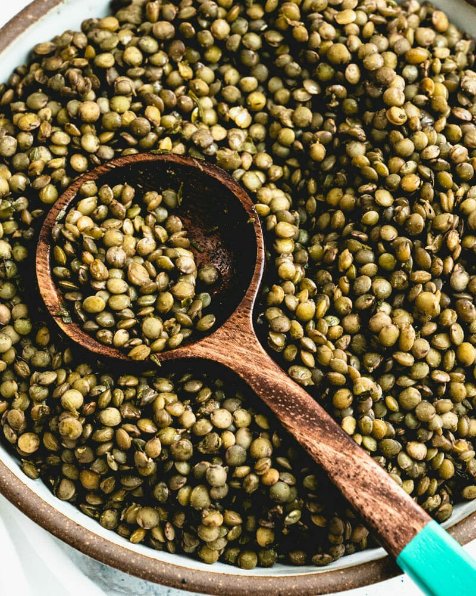

Lentils

Description
This is a meal is simple and cheap to prepare, not to mention nutritious and delicious.
Ingredients
- one pound of lentils
-
- salt
- curry powder
- garlic powder
- water
Steps
- Bring 4 cups of water to a rolling boil in a large pot.
- Place the lentils into the pot.
- Add spices and stir.
- Stir occassionally as water is absorbed by the lentils or evaporates over about twenty minutes.
- Allow to cool, then serve and enjoy